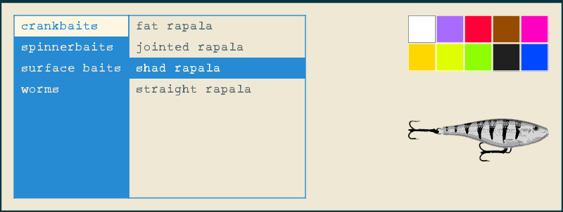

You have half a dozen rods and a tackle box of multifarious colored lures - a compliment usually found in dreams or games. So use it wisely!
If you select a rod that does not have a lure, you will open your tackle box and pick a lure. Your rods have varying cast ranges, and once a rod has a lure set you can quickly switch to it without retying a lure.
If you don't have a rod selected, you will be asked to pick one first. Pick a lure type and color.

Use your mouse cursor to aim, and click the mouse button to cast.
Casting into aquatic vegetation or around rocks and logs is a good bet. Aiming for land, however, is not. Your lure can snag and you will lose it, costing you time while tying a new one.